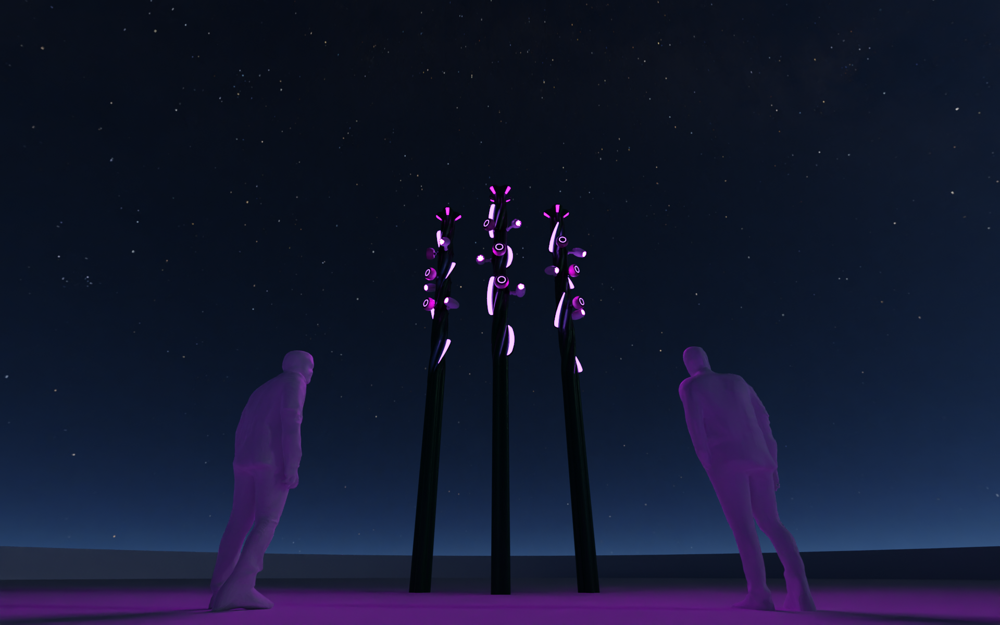
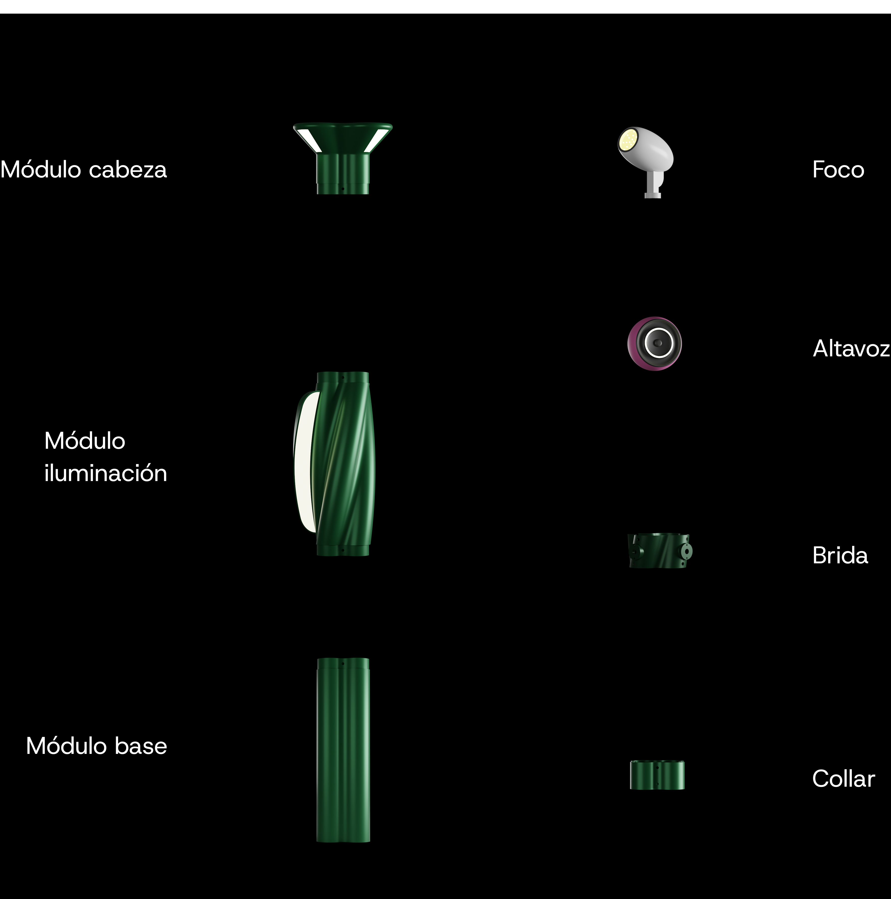

FUTURA SYSTEM
"FUTURA SYSTEM" es una farola modular multifuncional para fomentar la interacción social y aumentar la percepción de seguridad en entornos urbanos.
El concepto se basa en la creación de un sistema de iluminación urbana multifuncional destinado a mejorar la interacción social, enriquecer el entorno circundante y crear una atmósfera atractiva para quienes utilizan el espacio.
El objetivo es desarrollar una iluminación versátil utilizando tecnologías LED e IoT que, combinadas con la difusión de música, puedan crear una atmósfera envolvente que fomente la interacción y el uso prolongado de los espacios públicos.

La forma de la sección permite modularidad y versatilidad, uno de los aspectos más importantes del proyecto. Gracias a su forma cuadrilobulada, los componentes se pueden apilar incluso cuando se giran 90° a lo largo del eje Z o se voltean, lo que permite diferentes composiciones con una forma orgánica.
Diseñado para municipios, instituciones públicas, organizadores de eventos y marcas musicales, el sistema transforma los espacios urbanos en centros sociales temporales. Los módulos configurables integran LED RGBW, altavoces y focos ajustables con ópticas intercambiables, capaces de resaltar elementos arquitectónicos, árboles y monumentos. La iluminación es dinámica, se sincroniza con la música y se regula mediante sensores IoT para optimizar el consumo y la seguridad. Ideal para plazas, parques y zonas peatonales, promueve experiencias inmersivas y atractivas en todas las estaciones del año.


La brida, que retoma la sección orgánica del poste, es un componente que añade mayor versatilidad al proyecto: además de ser útil para el montaje de faros y altavoces, se puede fijar a varias alturas deslizándola sobre el módulo para un posicionamiento aún más preciso.